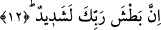
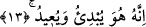

12. Şüphesiz Rabbinin yakalaması çok şiddetlidir.
Bu cümle, bir başlangıç cümlesidir. Burada Peygamberimiz (s.a.)’e hitap olunuyor. Bu
hitapla Peygamber Efendimiz’in kavminin kâfirlerinin âyette ifâde edilen tehdidden
nasiplerinin bol olacağına işâret ediliyor. Ayrıca “rabbike/senin rabbin” denilmesi de
buna işâret etmektedir. Âyette geçen “el-Batş” herhangi bir şeyi kıskıvrak ve şiddetle
yakalamak, ele geçirmek demektir. Aynı kelimeden türeme “yedun batışe” “kıskıvrak
yakalayan el” demektir. Âyette Allah’ın kıskıvrak yakalamasının “şiddetli” sıfatıyla
nitelenmesi ile Allah’ın yakalamasındaki şiddet unsuru kat kat arttırılmış ve
güçlendirilmiştir. Bu Allah’ın yeryüzündeki zâlimleri ve zorbaları yakalaması ve onları
azap ve intikam ile cezâlandırması demektir. Allah’ın bu kimseleri kıskıvrak yakalayıp
cezâlandırması her ne kadar belli bir süre geçtikten sonra olacak ise de bu onun
âcizliğinden değil, belli bir hikmetten dolayıdır.
13. Bilin ki O, (kâinat yokken) ilk olarak yaratan, (ölümden sonra tekrar hayatı)
geri getirendir.
Bu şu demektir. Yaratmayı ilk başlatan ve yaratıkları yokluktan varlık dünyasına
çıkaran, sonra onları öldürecek olan, ardından canlandırmak sûretiyle yeniden iâde
edecek olan O’dur. Bu iâde, hiçkimsenin müdahalesi olmaksızın yapılan iyiliklere ve
kötülüklere karşılığını vermek içindir. İşte bu ifâde içinde Allah Teâlâ’nın kıskıvrak
yakalaması kavramına daha fazla bir şiddet unsuru katılmaktadır.
Âyetteki “ilk başlatma ve tekrar iâde etme” tâbirinin tefsiri sâdece bu kadarıyla da
kalmaz. Bu hususta başka ihtimaller de mevcuddur. Mesela; “dünyada iken kâfirleri
kıskıvrak yakalamayı ilk başlatan ve âhirette bunu tekrarlayacak olan O’dur” demek
mümkündür. Yani O, kendi tutuş ve kavrayışını, güç ve kudretini dünyada kâfirlere
âşikâr eder. Onları âhirette de aynı şekilde güç ve kudretle kıskıvrak yakalar. Bu
adâletin alâmetidir. Bir başka ifâdeyle; kıskıvrak yakalamayı ilk başlatan veya âhirette
azâbı ilk başlatacak ve orada tekrarlayacak olan O’dur. Bu son verdiğimiz anlam Nisa
sûresindeki şu âyetin anlamını hatırlatır mâhiyettedir. Orada Allah şöyle buyurur:
“Şüphesiz âyetlerimizi inkâr edenleri gün gelecek bir ateşe sokacağız onların
derileri pişip acı duymaz hale geldikçe, derilerini başka derilerle değiştiririz ki
acıyı duysunlar.” (Nisa 4/56)
İbn Abbas (r.a.) şöyle der: cehennemliklerin vücudlarını Cehennem ateşi yer, ta ki o